Como entrar, o que cada área mostra, como testar e ensinar a Gabi e uma rotina de poucos minutos por dia.
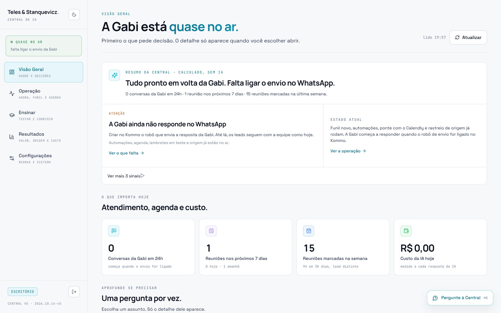
A Central é o painel do escritório. Ela mostra o que a Gabi (a assistente virtual do WhatsApp) e as automações do funil fizeram, onde estão os leads no SDR e no CLOSER, quem tem reunião, de onde os leads vieram e quanto a IA custou. Ela só lê o Kommo: não apaga nem edita card.
| Área | Responde a pergunta | O que tem dentro |
|---|---|---|
| Visão Geral | Está tudo bem? O que pede decisão? | Resumo do dia, um cartão de prioridade, quatro números e o que está ligado. |
| Operação | O que está acontecendo agora? | Agora, Funil, Agenda, Automações, Retomada e Histórico. |
| Ensinar | Como corrijo a Gabi? | Testar a Gabi, ensinar uma correção, ler as regras e acompanhar os pedidos. |
| Resultados | Que valor a operação produziu? | Resumo, dinheiro parado, origem dos leads, simulador "E se?" e recibo de valor. |
| Configurações | Como a operação está montada? | Funil e etapas, agenda e distribuição, automações, retomada, sistema e segurança. |
Cada área abre num assunto. O detalhe só aparece quando você clica no que quer ver.
Se uma fonte (Kommo, agenda, diário) não responde, a parte dela fica em branco com um aviso. A Central nunca mostra zero no lugar de "não sei".
Os resumos e as respostas do "Pergunte à Central" saem de conta feita na hora, sem usar IA e sem custo.
| Quando | Onde | O que olhar |
|---|---|---|
| Todo dia, 2 min | Visão Geral | O cartão principal e as reuniões de hoje e amanhã. |
| Toda semana, 10 min | Resultados › Dinheiro parado e Origem | Quem está parado há 7 dias ou mais e de onde vieram os leads. |
| Toda semana, 5 min | Ensinar | Teste uma conversa difícil e mande uma correção se algo ficou torto. |
| Todo mês | Resultados › Recibo de valor | Imprima ou salve em PDF o resumo dos 30 dias. |
Depois de 8 senhas erradas seguidas, o aparelho fica bloqueado por 15 minutos. Não compartilhe a senha fora da equipe. Para trocar, peça à Control Gestão.
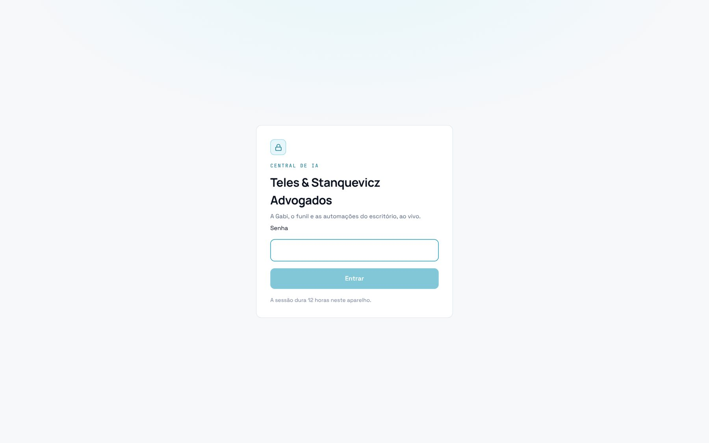
O menu fica no alto, em faixa. Todas as telas funcionam na tela pequena, inclusive o funil.
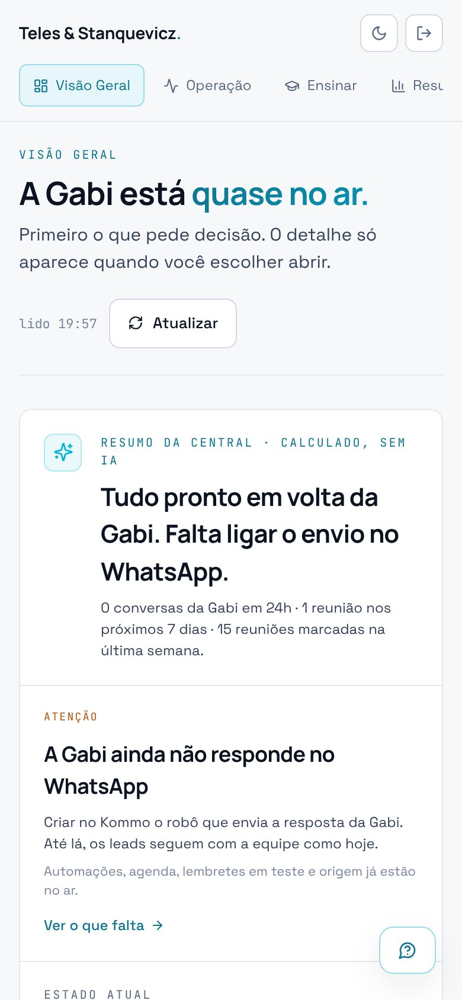
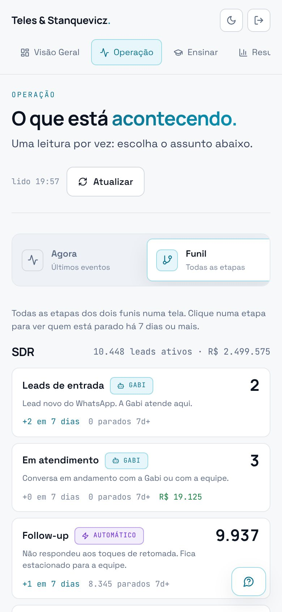
A primeira tela depois de entrar. Em poucos segundos ela diz se está tudo bem e o que pede decisão.
| Título | Significa |
|---|---|
| sendo verificada | A Central ainda está lendo o Kommo, o diário e a agenda. Espere alguns segundos. |
| quase no ar | Funil, automações, agenda e origem já rodam. Falta ligar o envio da Gabi no WhatsApp. |
| operando bem | A Gabi está respondendo e nada falhou nas últimas 24 horas. |
| pedindo atenção | Alguma fonte não respondeu ou houve falha. O cartão principal diz o quê. |
O cartão grande é a coisa mais importante para olhar agora: uma falha, um card parado no CLOSER, reuniões antigas sem desfecho, a agenda de amanhã. Clique nele para ir direto ao detalhe. Em Ver mais sinais ficam os outros, em ordem de importância.
Embaixo há três assuntos. Próximos passos leva às áreas. Funil agora mostra SDR e CLOSER em barras. O que está ligado lista cada peça da operação e o que falta.
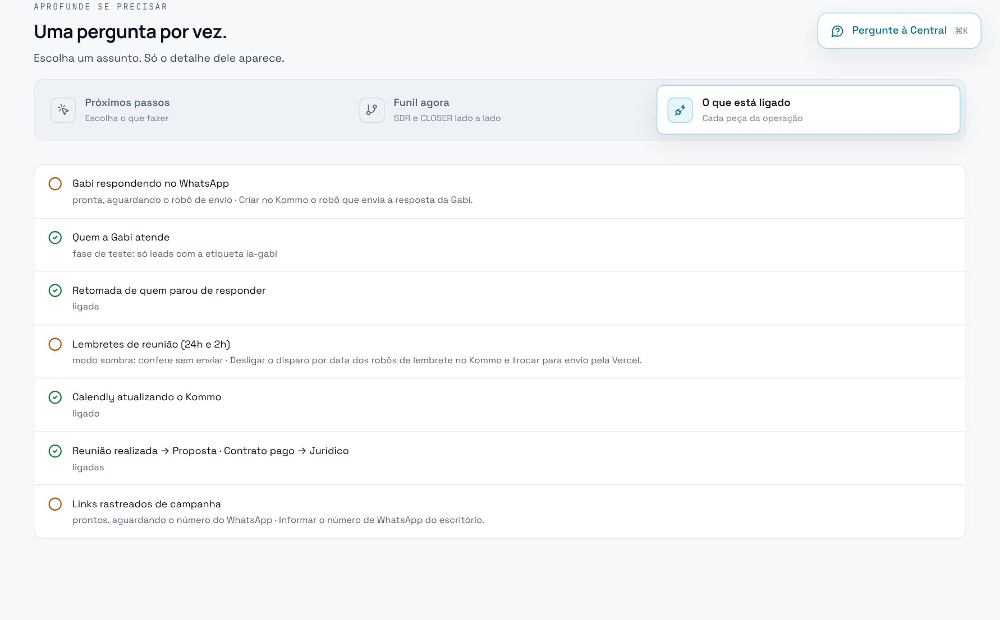
O que está acontecendo, em seis subabas. Escolha uma no alto da tela.
Todas as etapas do SDR e do CLOSER lado a lado, sem rolar. Cada etapa mostra quantos leads tem, quantos entraram nos últimos 7 dias e quantos estão parados há 7 dias ou mais. A etiqueta diz como o card chega ali:
Gabi a Gabi atende ou coloca o card ali Automático uma automação move sozinha Equipe a equipe move
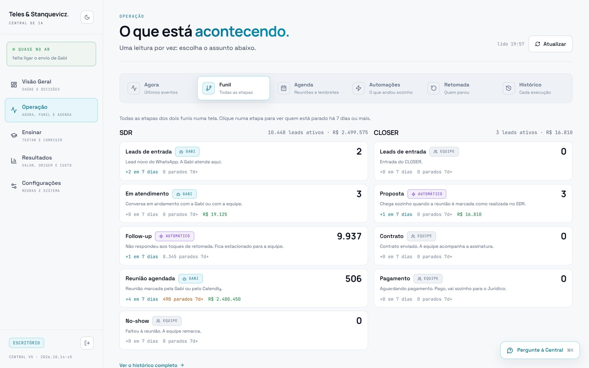
Follow-up é estacionamento. Ali ficam os leads que não responderam às retomadas. Ficar parado nessa etapa é o normal, por isso ela não entra no radar de dinheiro parado.
As próximas reuniões, lidas do campo Reunião dos cards, com etapa e responsável. Quando uma reunião é marcada ou cancelada no Calendly, o card no Kommo é atualizado sozinho e o evento aparece aqui.
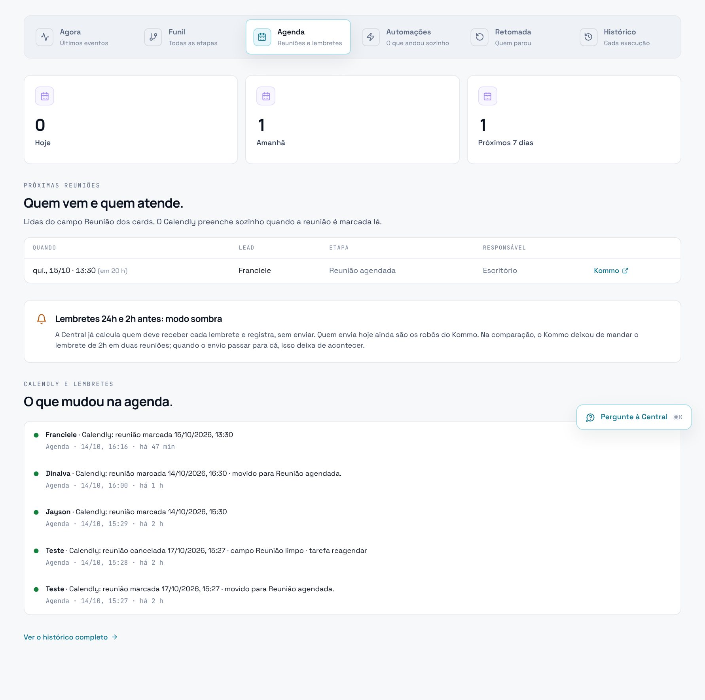
Modo sombra quer dizer que a Central já calcula quem deve receber cada lembrete, sem enviar, para comparar com o que o Kommo faz hoje. Na comparação, o Kommo deixou de mandar o lembrete de 2h em duas reuniões. Quando o envio passar para a Central, isso deixa de acontecer.
As regras que saíram dos robôs do Kommo e agora rodam na Central, com o gatilho e o efeito de cada uma e a lista do que foi executado.
Antes de mexer, cada automação relê o card. Se ele já mudou, ela não faz nada. Se aparecerem mais de 20 mudanças em 10 minutos (uma limpeza de funil, por exemplo), as automações pausam para não arrastar cards por engano.
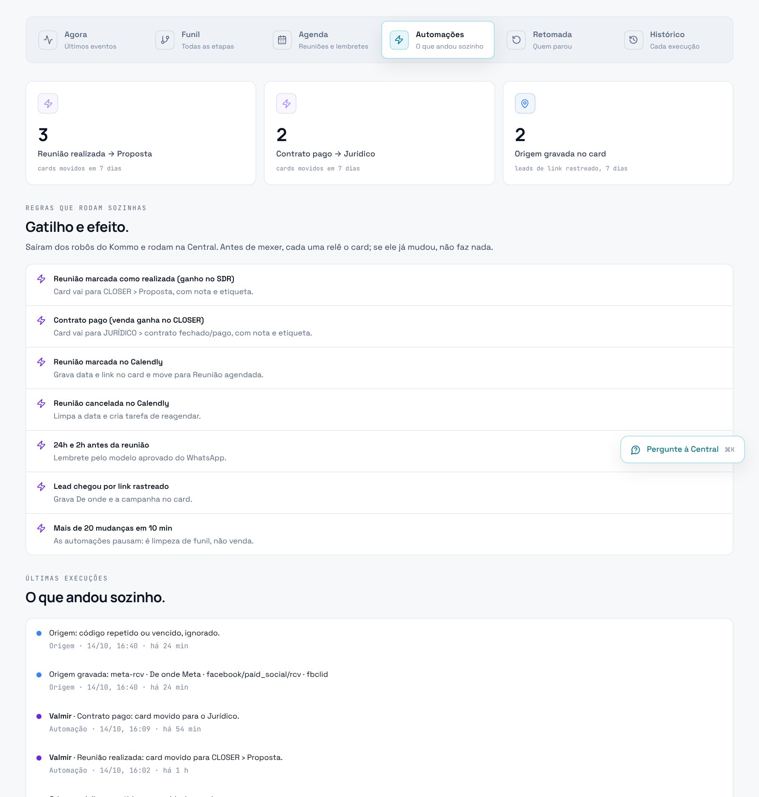
As últimas execuções e os números das 24 horas. Atualiza sozinho a cada 2 minutos.
Quem parou de responder e quando sai o próximo toque da Gabi. São até dois toques, dentro da janela de 24 horas do WhatsApp e entre 8h e 20h.
Cada execução, com filtro: Gabi, automações, agenda, origem, retomada ou falhas.
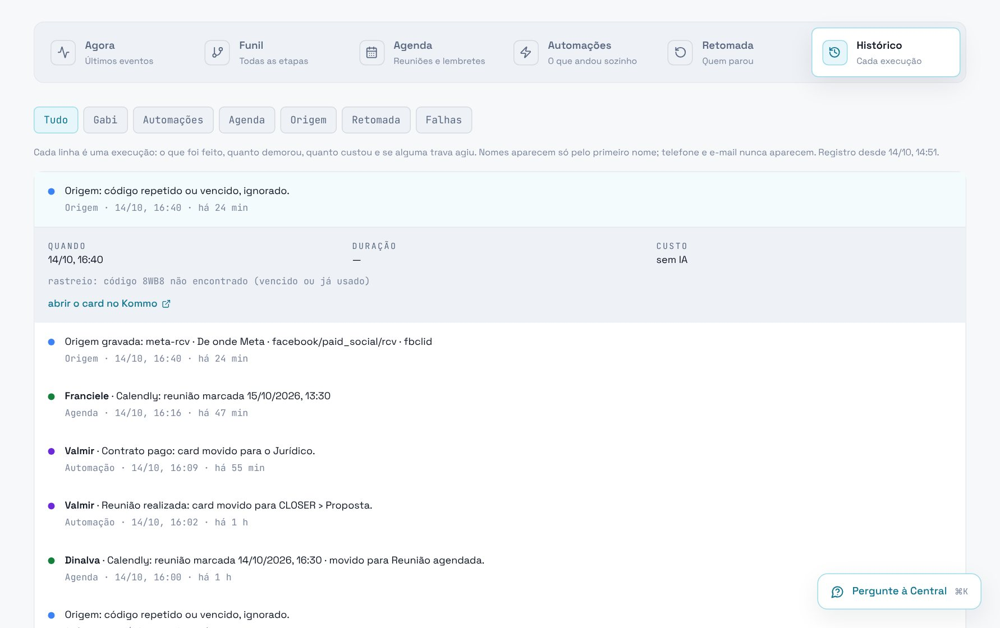
Privacidade. Na Central, os leads aparecem só pelo primeiro nome. Telefone, e-mail e CPF são retirados antes de chegar na tela.
Onde vocês testam a Gabi e dizem, do seu jeito, o que ela deveria fazer diferente. Ninguém precisa mexer em código ou no texto de instrução dela.
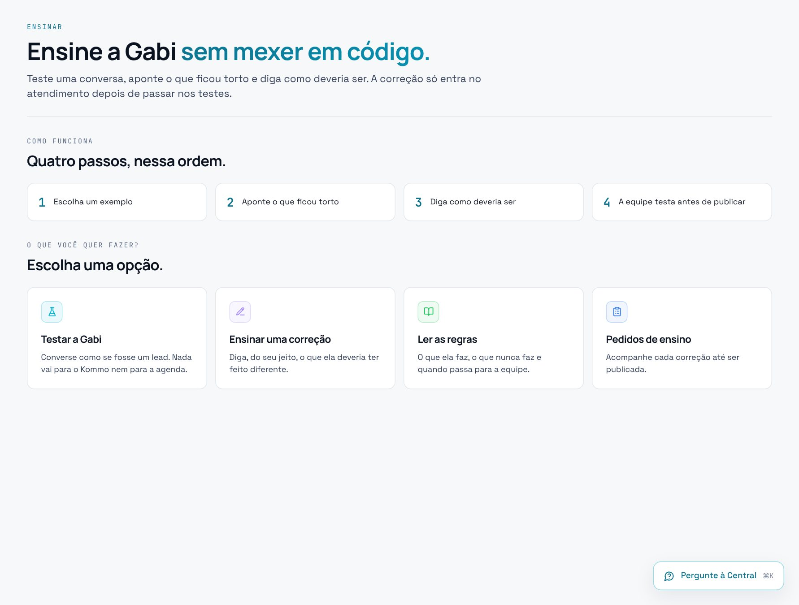
Escolha o assunto (dívida com banco, financiamento de veículo ou busca e apreensão) e escreva como um lead escreveria. É a mesma Gabi do atendimento, com as mesmas regras e travas, mas num card de mentira:
Cada mensagem de teste custa poucos centavos. Há um limite de 150 por dia.
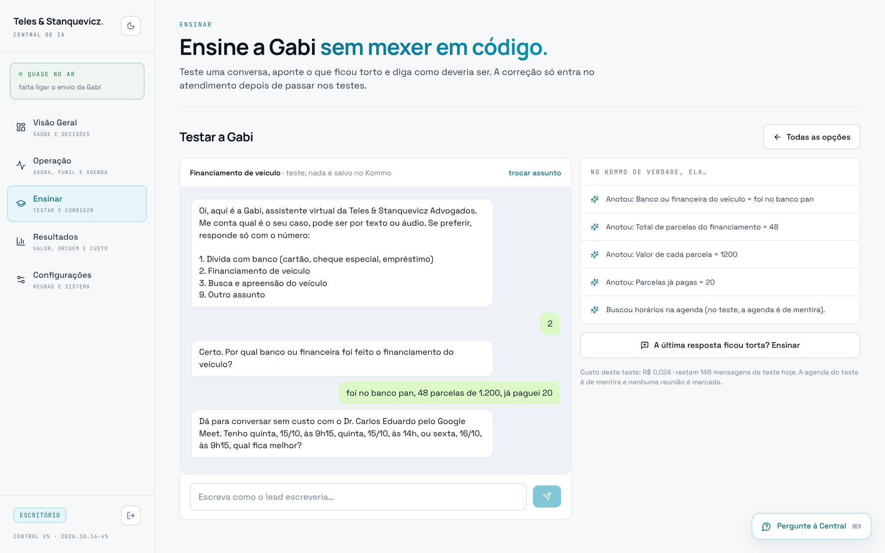
Se uma resposta ficou torta, clique em A última resposta ficou torta? Ensinar, ou abra Ensinar uma correção. Cole o exemplo (opcional) e escreva como deveria ser, com suas palavras. Por exemplo: "quando a pessoa diz que está desesperada, a Gabi deveria acolher antes de perguntar o valor".
A Central diz na hora para onde a correção vai:
| Destino | O que acontece |
|---|---|
| jeito de conversar | Vira regra da Gabi. A equipe técnica escreve a regra, roda os cenários de teste e só publica se todos passarem. |
| agenda | Horário é lido do Calendly na hora. Mudou a disponibilidade, ajuste no Calendly e ela já oferece os novos horários. |
| funil | Regra de etapa, responsável ou tarefa. A equipe técnica testa num lead de teste antes de ligar. |
| fora do escopo | Valores, honorários e percentuais: a Gabi não fala, por decisão do escritório. Mudar isso é conversado antes. |
O que a Gabi pergunta em cada assunto, o que ela nunca faz, quando passa para a equipe, como marca a reunião, para quem vai cada lead e como funciona a retomada. As regras de "nunca faz" são travas: se uma resposta casar com uma delas, ela não sai. A Gabi reescreve uma vez e, se insistir, sai um texto seguro aprovado.
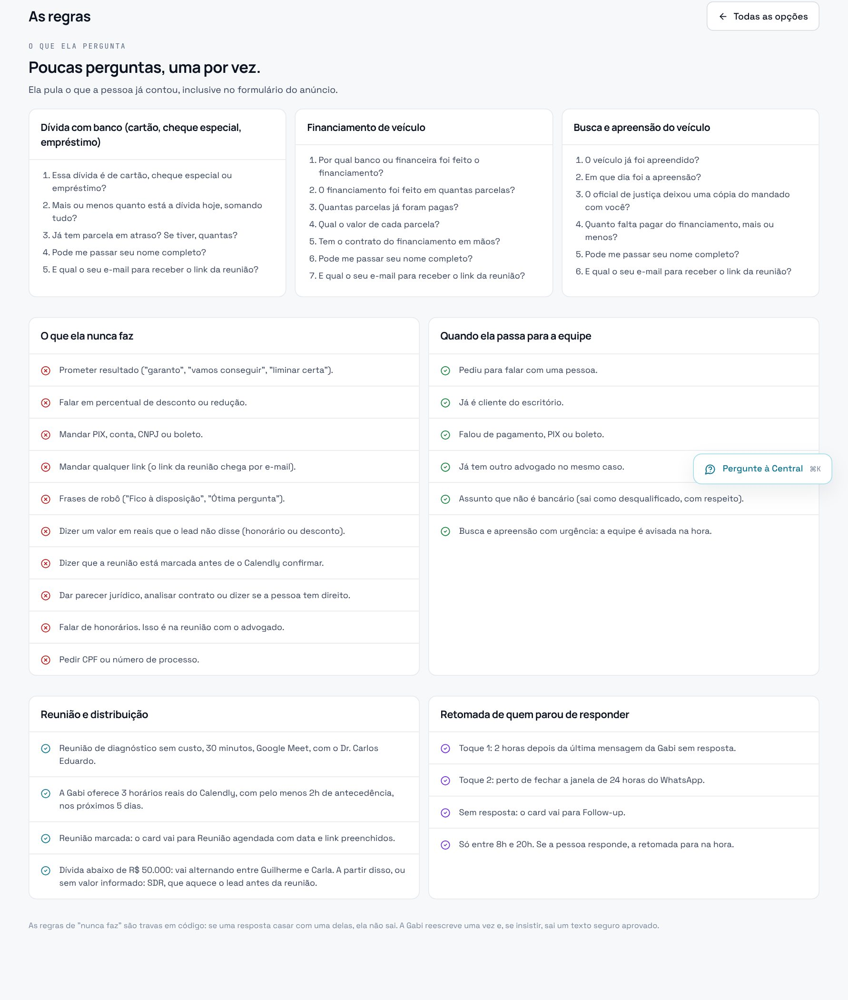
Cada correção enviada aparece aqui com o andamento: recebido, em teste, publicado ou não publicado (com o motivo). Nada muda no atendimento antes de "publicado".
O valor que a operação produziu, sempre com a fonte e a regra de contagem à vista.
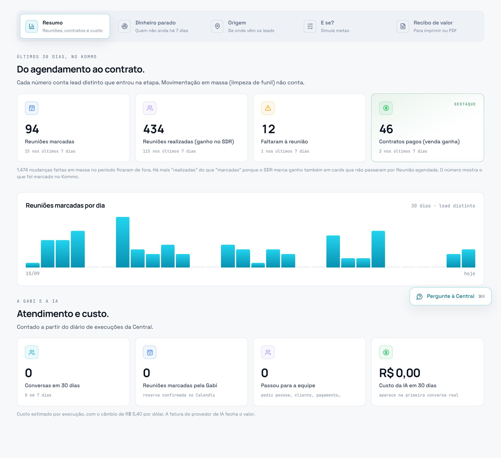
As etapas com cards sem mudança há 7 dias ou mais, as duas mais importantes primeiro. Etapas do CLOSER vêm marcadas como "perto do contrato". Clique em "ver os cards" para abrir a lista com o link de cada um no Kommo.
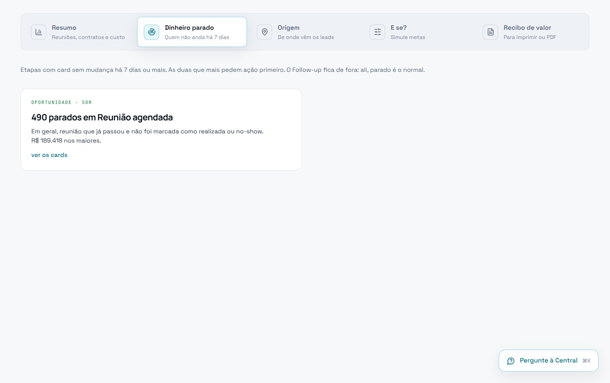
De onde vieram os leads criados nos últimos 7 ou 30 dias (campo De onde), as campanhas e os cliques em cada link rastreado. Desde o fim de setembro, a maior parte dos leads do WhatsApp entra sem origem. Os links rastreados da Central resolvem isso quando entrarem nos anúncios: quem chega por eles já vem com a origem e a campanha gravadas no card.
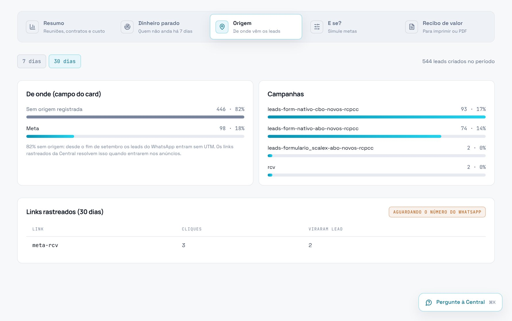
Um simulador de metas. Ele começa com os números reais do Kommo (leads e reuniões dos últimos 30 dias, faltas) e você ajusta as taxas para ver quantas reuniões e contratos dariam por mês. Com o honorário médio preenchido, mostra também o valor. A linha de sensibilidade diz quanto cada 5 pontos a mais na taxa de marcação somam. É conta, não previsão.
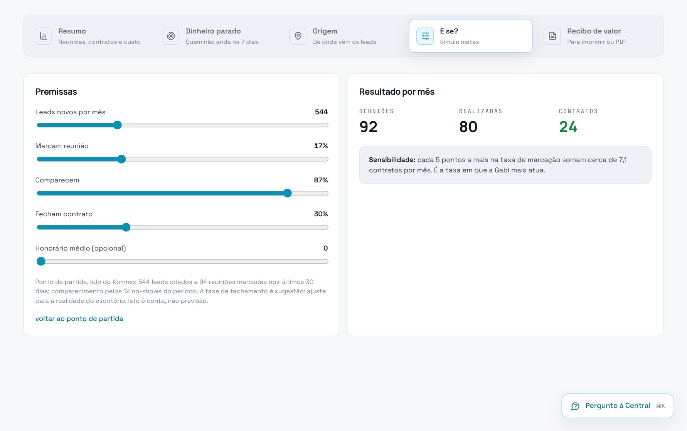
O resumo dos 30 dias numa folha: conversas da Gabi, reuniões, contratos, ações feitas sozinhas, tempo da equipe poupado e custo da IA. O tempo poupado é estimativa, e você ajusta os minutos por conversa. Clique em Imprimir ou salvar PDF para guardar ou mandar para os sócios.
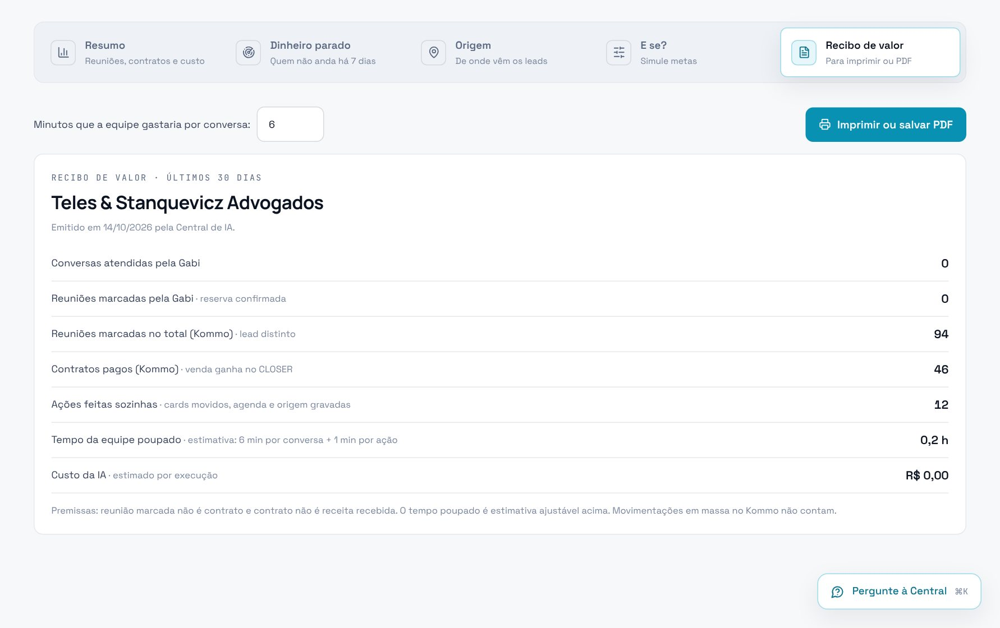
Configurações mostra como a operação está montada. É para consulta: mudanças são feitas pela equipe técnica e conferidas antes de valer.
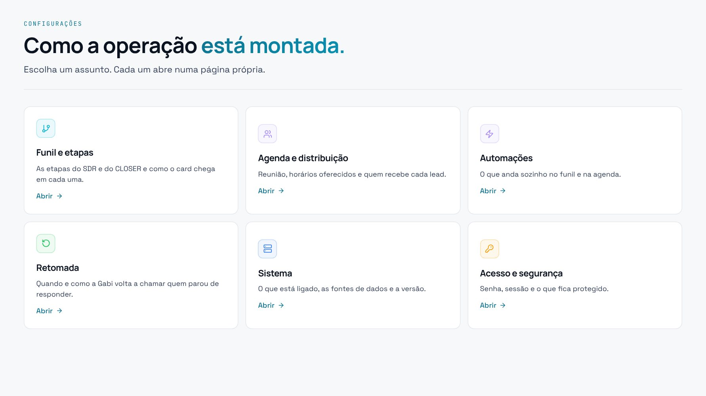
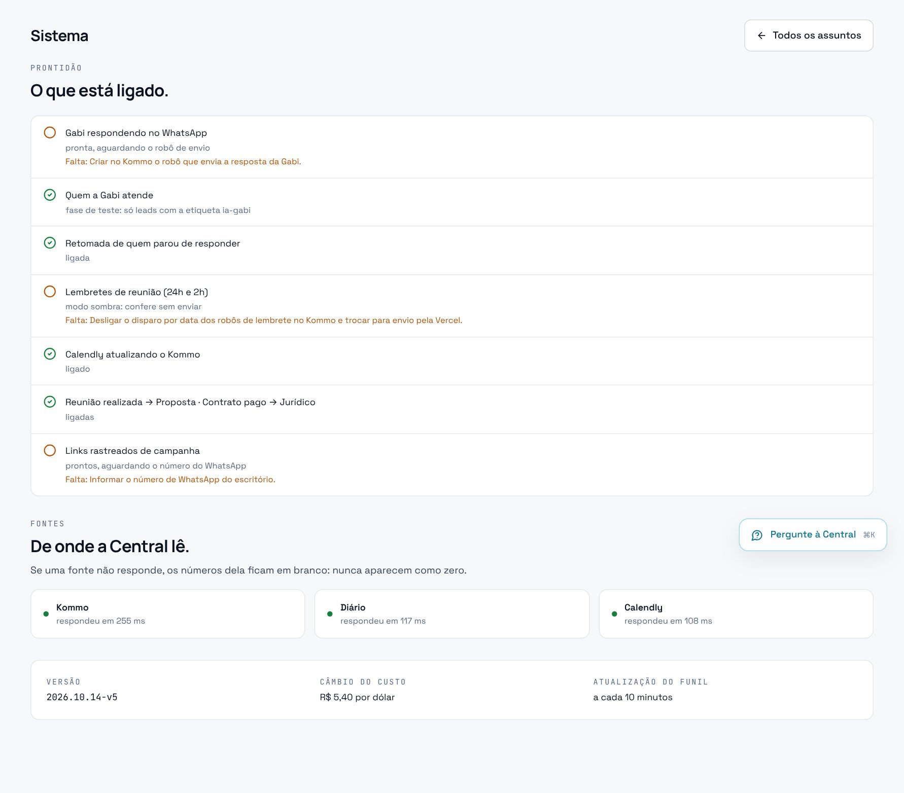
O botão no canto de baixo (ou Ctrl+K no computador) abre um campo de perguntas. Escreva como falaria ou use os atalhos: "O que falta ligar?", "Quanto a IA custou?", "Teve falha hoje?", "Quem está parado?", "Quantas reuniões vêm aí?", "Como está o funil?". A resposta vem com os números que a sustentam e um link para a tela certa. É calculada na hora, sem usar IA.
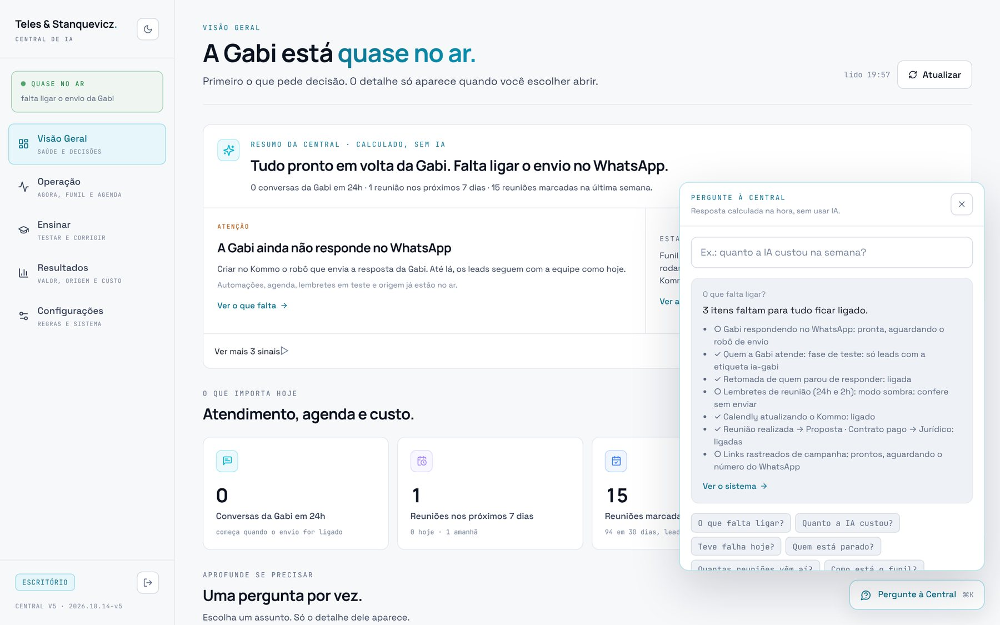
| A Central mexe no Kommo? | Ela só lê. Quem move card são as automações descritas na Operação, que conferem o card antes de agir. |
| O teste da Gabi manda mensagem? | Não. Roda num card de mentira, sem WhatsApp, sem Kommo e sem Calendly. |
| Apareceu "não conseguiu ler" | Clique em Atualizar. Se continuar, avise a Control Gestão. Enquanto isso, os números daquela parte ficam em branco de propósito. |
| Por que só o primeiro nome? | Proteção de dados. Para ver o card completo, use "abrir no Kommo". |
| Quanto custa a IA? | A Central mostra o custo estimado de cada resposta e a soma do dia, da semana e do mês. A fatura do provedor fecha o valor. |
| Quero trocar a senha | Peça à Control Gestão. A senha nunca fica guardada em texto, só a versão embaralhada dela. |
Esta página envelhece. A versão sempre atual fica em Visão Geral › O que está ligado.
| Peça | Estado | O que falta |
|---|---|---|
| Funil enxuto SDR e CLOSER | no ar | nada |
| Reunião realizada → Proposta | no ar | nada |
| Contrato pago → Jurídico | no ar | nada |
| Calendly atualizando o Kommo | no ar | nada |
| Retomada de quem parou | pronta | começa junto com a Gabi |
| Gabi no WhatsApp | pronta | criar no Kommo o robô que envia a resposta dela; depois, começar por uma etiqueta de teste e ampliar aos poucos |
| Lembretes 24h e 2h | modo sombra | desligar o disparo por data dos robôs de lembrete no Kommo e passar o envio para a Central |
| Links rastreados de campanha | prontos | informar o número de WhatsApp do escritório e usar os links nos anúncios |
A Visão Geral passa de "quase no ar" para "operando bem" sozinha. A primeira conversa real inaugura a contagem de conversas, o tempo de resposta e o custo por resposta. Até lá, esses números aparecem como zero porque de fato não houve conversa, e a Central diz isso ao lado.